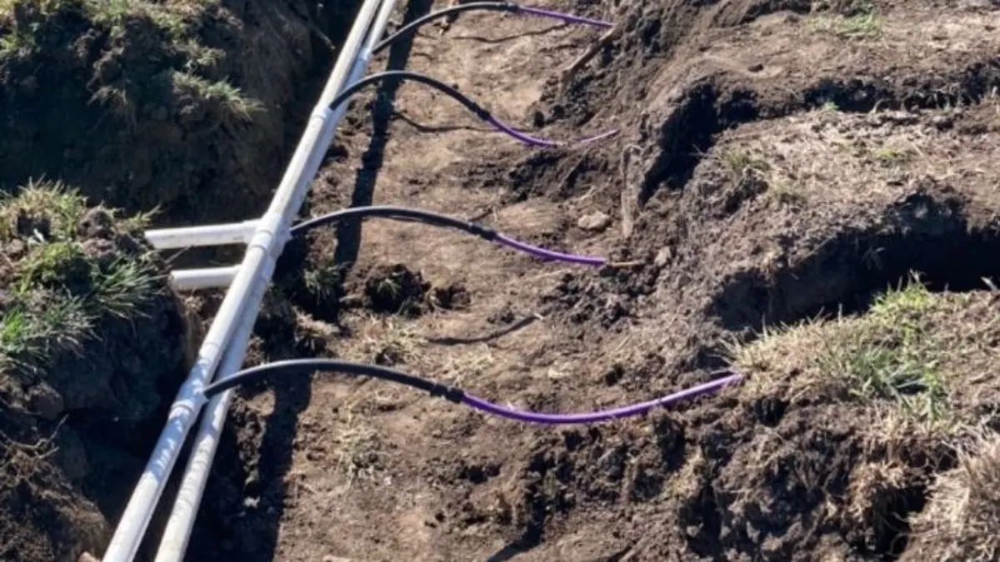

Septic Service Overview
New system installation, how the whole process works, and what a septic system is doing underground.
The soil decides what system your ground will take, and the perc test is how anyone finds that out. It is the first step on a new build and the cheapest way to avoid designing the wrong system.

A septic drain field works by letting treated liquid soak into the soil. How fast the soil accepts water determines how big the field has to be, how it has to be laid out, and in some cases whether a conventional field will work on that ground at all. Central Kansas makes this a real question rather than a formality: heavy clay in the low ground, rocky limestone up in the Smoky Hills, and plenty of properties with both inside the same few acres.
Request a QuoteA percolation test measures how quickly water soaks into the soil at the depth a drain field will sit. Holes are dug or bored at the proposed field location, saturated, and then the rate at which the water level drops is measured. That rate, together with a look at the soil profile itself, is what a system design is built on.
You need one when you are building on raw ground, when you are replacing a failed system and the original design is unknown or no longer adequate, and when you are adding enough load to a property that the existing field will not carry it. If you are buying bare land with the intention of building, a perc test before you close is one of the most useful few hundred dollars you can spend, because a property that will not perc is a very different property than the one you thought you were buying.
The test also establishes where the field can go, which has knock-on effects on the whole site plan. Setbacks from the well, the house location, the driveway and any future shop all get easier to place once you know where the field has to be.
Heavy clay drains slowly. A slow perc rate does not necessarily mean no system; it usually means a larger field, a different layout, or in some cases an engineered or alternative system rather than a conventional one. What it always means is that guessing the field size is a bad idea, because a field undersized for clay will fail and it will fail in a way that cannot be repaired cheaply.
Rocky and limestone ground is the other end of the problem. Shallow bedrock limits how deep a field can go, and fractured rock can move water too quickly to treat it properly, which is a groundwater issue as much as a performance one. Both conditions exist within short distances around here, which is why a test on the actual proposed field location matters more than a general idea of what the area is like.
We have put systems in across enough of this ground in Saline, Ottawa, Lincoln, Dickinson, Ellsworth and Cloud counties to know which questions to ask before anyone starts digging. The blog posts linked below go through the clay and rocky-ground cases in more detail.
Perc testing and site evaluation from Mike's Services LLC includes:
Mike's Services LLC provides septic perc testing and soil evaluation throughout Central Kansas including Salina, Tescott, Bennington, Minneapolis, Lincoln, Ellsworth, and Abilene. We serve property owners across Saline County, Ottawa County, Lincoln County, Dickinson County, Ellsworth County, and Cloud County. Not sure if we cover your location? Call us. We may be able to help even in areas not listed here.
Common questions from Central Kansas property owners.
A percolation test measures how fast water soaks into the soil where a drain field would go. Test holes are dug at the proposed location, saturated, and the drop in water level is timed. That rate drives the size, depth and layout of the field.
A soil evaluation is part of the design and permitting process for a new system, and it is administered by your county health department. The exact testing they require can vary by county, so confirm the specifics with yours. Either way, nobody can responsibly design a field without knowing what the soil does.
The field work is usually a single visit, but the holes need to be presaturated before the timed measurement, so the full process can span more than one day depending on soil conditions and weather.
A slow rate usually means a larger field, a different layout, or an alternative system design rather than no system at all. It is not automatically a dead end, but it does change the cost and the plan, which is exactly why you want to know before buying or building.
Yes, and it is common around here. Shallow bedrock limits field depth and fractured rock can move water too fast to treat properly, so both get factored into the design. That is a reason to test the actual field location rather than assume based on the neighbourhood.
Most people call about one of these and turn out to need another. Here is the whole list.
New system installation, how the whole process works, and what a septic system is doing underground.
Routine tank pump-outs and clean-outs. If you cannot remember the last one, it is due.
Sewer line backups, lateral lines, yard drains and drain tile. 24/7 for the emergencies.
Failing drain fields, cracked or collapsed tanks, broken distribution boxes and crushed lines.
Buying or selling a rural property, or confirming a system is sound before you spend money on it.
📄 From the Blog: Septic Perc Test & Soil Testing in Saline County KS. Read the full guide.
📄 From the Blog: Septic Installation Cost in Kansas Clay: Saline County Guide. Read the full guide.
📄 From the Blog: Septic Systems on Rocky Limestone Ground in Lincoln County KS. Read the full guide.
Back to Septic Service in Salina & Saline County, or see everything Mike's Services LLC does.
Call us or submit a quote request and we will get back to you quickly with honest answers and a clear price.